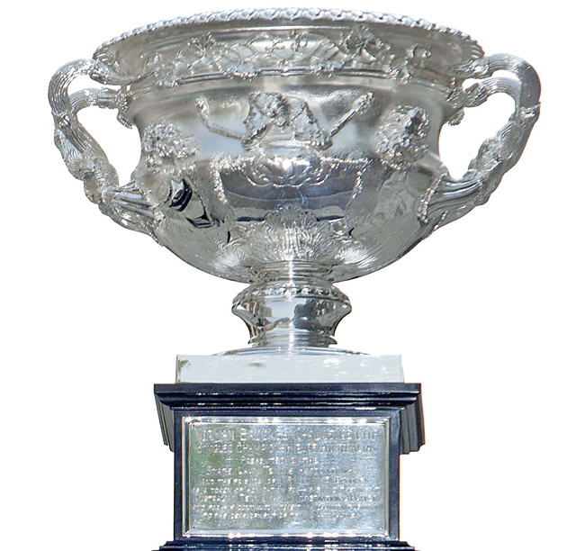
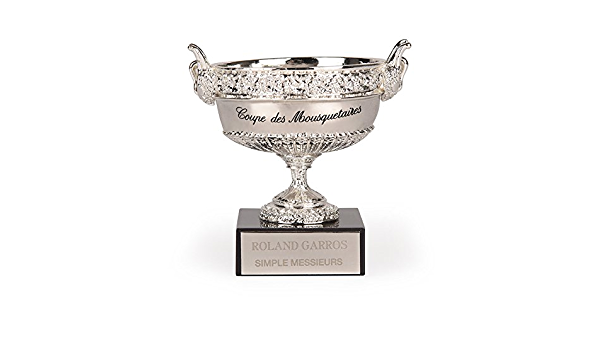
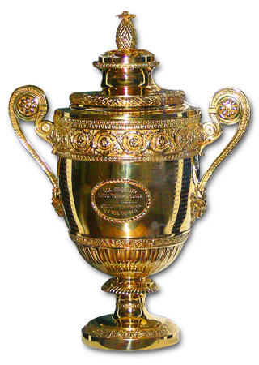
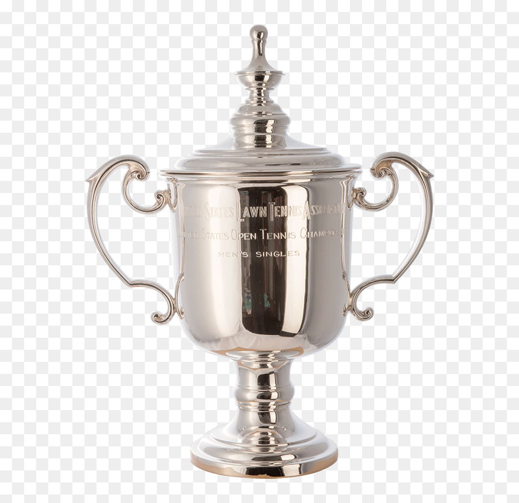

R
A
F
A
E
L
N
A
D
A
L
En la actualidad, hay cuatro Grand Slam durante el año y son los cuatro torneos más importantes.
A continuación, encontrareis una tabla con el palmarés en Grand Slam de Rafael Nadal:
| Copa | Competición | Veces Ganada |
|  | Australia Open | 1 |
|  | Roland Garros | 13 |
|  | Wimbledon | 2 |
|  | US Open | 4 |